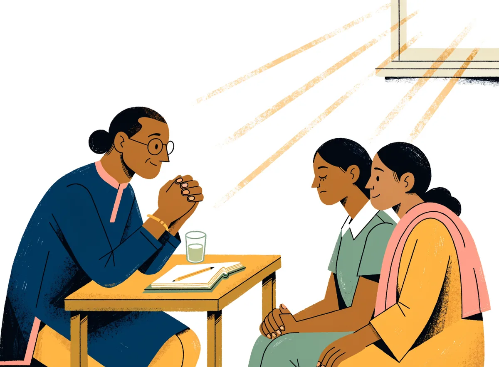
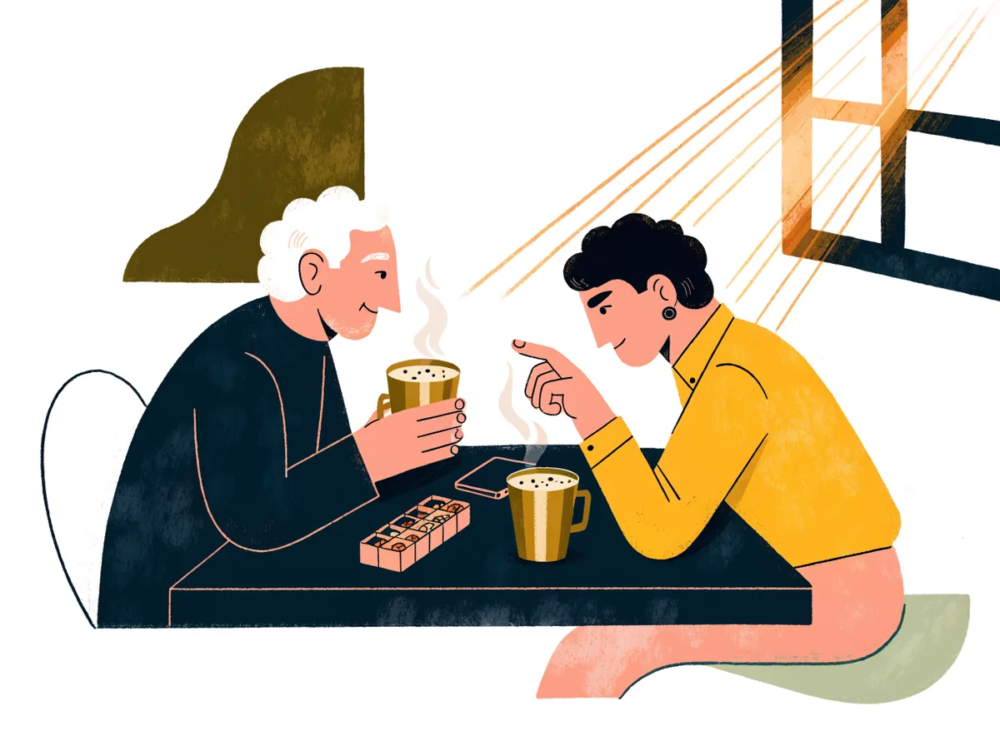
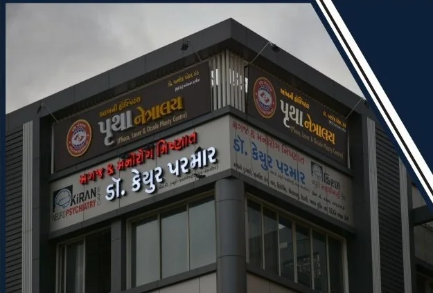
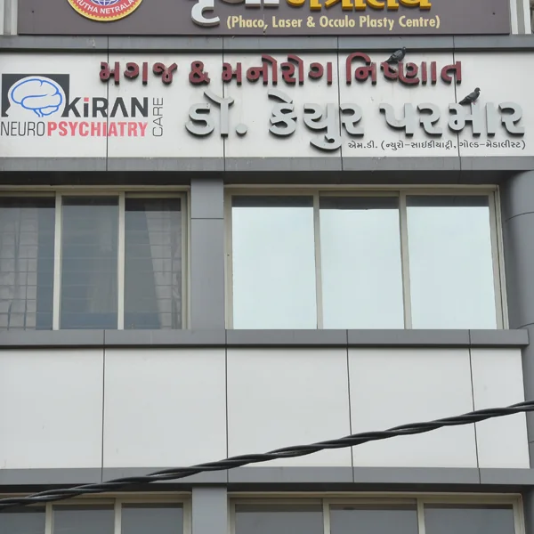

Bhavnagar · Since 2012
The doctors Bhavnagar trusts with its mind.
Dr. Keyur Parmar and Dr. Vikram Zala have seen this city's families through depression, addiction, epilepsy and the hard nights in between. Gold-medallist training, a clinic on Jail Road since 2012, and care that starts with your privacy.

Start where you are
Tell us who this is for. We will show you the right first step.
Specialty clinics
One place for the brain and the mind.
Mood
Depression, bipolar disorder, mania
Anxiety & OCD
Panic, phobias, obsessions, compulsions
Psychosis
Schizophrenia, suspicious thoughts, voices
Deaddiction centre
Tobacco, gutka, alcohol, ganja, opioids
Child & adolescent
ADHD, autism, learning, behaviour, exam stress
Sexual health clinic
Private consults, couples welcome
EEG & epilepsy
Seizures, fits, EEG recording on site
Sleep
Insomnia, nightmares, sleep-wake problems
Headache
Migraine, tension headache, chronic pain
Memory & elderly
Dementia, late-life depression, caregiver support
Your first visit
Nothing here will surprise you.
Most people put off the first visit for months because they do not know what will happen inside. Here is exactly what happens.

Book online, or walk in
Pick a doctor and a time. You get a token and an "arrive by" time, so you are not sitting in a waiting room for an hour.
A short form at home, in your language
What is troubling you, since when, what you have tried, medicines you take. Kiran Saathi can fill it with you by chat. Your doctor reads it before you enter.
Time with the doctor
Your history, your sleep, your worries, what you want back in your life. Family can sit in or wait outside. Your choice, every time.
A plan you can actually read
Each medicine explained in plain words: what it is for, when to take it, what to expect by week 2 and week 6. Your first follow-up date is fixed before you leave.
Between visits, you are not alone
Reminders, 2-minute check-ins, and Saathi for questions at 2 am. Your doctor sees how you are trending at the next visit.
Reputation
Known in Bhavnagar long before this website.


How both doctors work
- Every medicine explained in your language before it is written
- A score at every visit, so decisions rest on evidence
- Family in the room or outside it, your choice every time
- A written plan and the first follow-up date fixed before you leave
Kiran Saathi
A companion between visits, with a doctor always behind it.
Saathi is the clinic's AI companion. It speaks Gujarati, Hindi and English, it knows your plan, and it knows its limits. It never diagnoses and never changes a dose. When something sounds unsafe, a human is alerted.
Tell Saathi what is wrong the way you would tell a friend. It turns that into a structured summary your doctor reads before you walk in.
"What is this white tablet for? What if I missed last night's dose?" Answered from your own prescription, in Gujarati.
Three minutes of guided urge-surfing when the gutka craving hits, then a one-tap call to your quit buddy.
Risk language opens the crisis card and alerts the clinic. Every summary is a draft until a doctor signs it.
Measurement-based care
We measure. We do not guess.
Every follow-up starts with a two-minute check-in on your phone: PHQ-9 for mood, GAD-7 for anxiety, ISI for sleep, Y-BOCS for OCD, Fagerström and AUDIT for addiction. Your doctor sees the trend, not just today's answer, and adjusts treatment on evidence.
Family Circle
Care that includes the people who care.
In Bhavnagar, a mother, a spouse or a son usually holds the medicines and watches for the warning signs. We built for that, with the patient in control of who sees what.

Caregiver access, with consent
A caregiver sees the medicine schedule, the next appointment, the red-flag guide and emergency contacts. Never the therapy notes. The patient switches it on and off.
See Family CircleYour rights, explained
The Mental Healthcare Act 2017 gives you the right to an Advance Directive and a Nominated Representative. Build both here in ten minutes, in your language, and keep a copy on your phone.
Build an Advance DirectiveWhat to do tonight
Plain guides for the hardest moments: a relative who has stopped medicines, a first seizure, someone who is talking about ending their life. Written to be read on a phone at 2 am.
Open the emergency guideMission Deaddiction
Quit with Kiran: a 90-day programme, not a lecture.
Gutka, mawa, bidi, alcohol. Saurashtra's addictions are everyday habits with deep roots. Our programme pairs medicine with a quit-day plan, daily check-ins, craving SOS on your phone, a family pledge, and follow-ups on video so distance is never the reason to drop out.
In their words
What getting better looked like.
Sample stories to show how this section works. The clinic replaces them with consented patient stories, names changed.
I came with my father because he had stopped recognising the road home. The doctor explained dementia to us in Gujarati, without hurry. We now have a plan, and a number to call.
Daughter of a patient, 61 · Memory clinic
Nobody in my office knows. I booked at night, got a token, was in and out in forty minutes. The panic attacks stopped by the sixth week.
Bank employee, 29 · Anxiety clinic
Fifteen years of gutka. The craving alarm on my phone and my wife's pledge did what willpower could not. Day 212 today.
Shop owner, 41 · Quit with Kiran
Myths & facts
Tap a card. The myth flips.
Once you start psychiatric medicines, you can never stop them.
Tap to flipMost courses have an end. How long depends on your history and how fully you recover. Stopping is planned with your doctor, step by step, never suddenly.
Tap to flip backMental illness is a weakness, not a medical condition.
Tap to flipIt is a medical condition like diabetes or heart disease, with biological, psychological and social causes. Most people improve substantially with the right treatment.
Tap to flip backA counsellor and a psychiatrist are the same thing.
Tap to flipA psychiatrist is a medical doctor with 12 or more years of training who can diagnose, prescribe and treat the physical causes too. Counselling often works alongside, not instead.
Tap to flip backFits and seizures are a mental illness or a spirit.
Tap to flipEpilepsy is a neurological condition from abnormal electrical activity in the brain. An EEG helps diagnose it and most seizures are controlled with medicine.
Tap to flip backFrom the doctors' desk
Short reads, written for families.
Mental health care for children: a guide for parents and teachers
When restlessness is more than restlessness, what a first assessment involves, and how school can help.
Sexual healthSexual problems: symptoms, causes and the treatment nobody talks about
Most sexual difficulties are common, medical, and treatable. What a private consult looks like.
DeaddictionTobacco and gutka: why quitting fails, and what works instead
Nicotine replacement, medicines, the first 72 hours, and the role of the family.
Visit us
Jail Road, opposite A Division Police Station.
- Address
- 309/310 Samved Complex, Opp. A Division Police Station, Jail Road, Bhavnagar 364001
- Hours
- Monday to Saturday · 10:00-13:00 and 16:00-19:00
Sunday closed · Emergency line open 24x7 - Phone
- +91 87582 99921
- Landline
- +91 278 2423513
- kiran.neurocare@gmail.com

